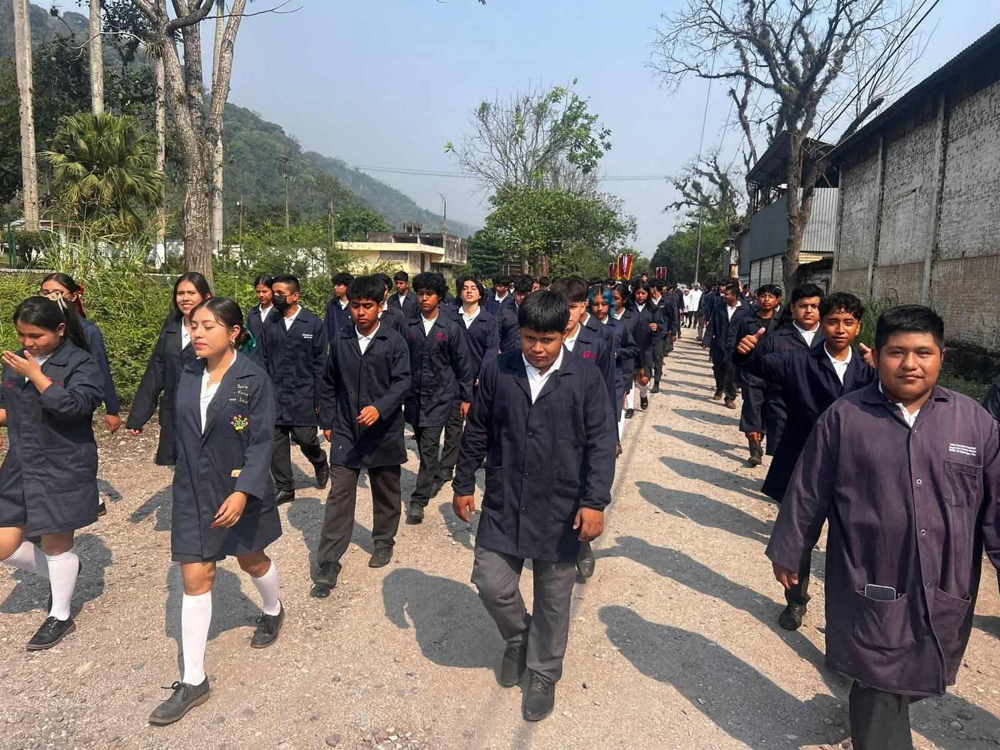
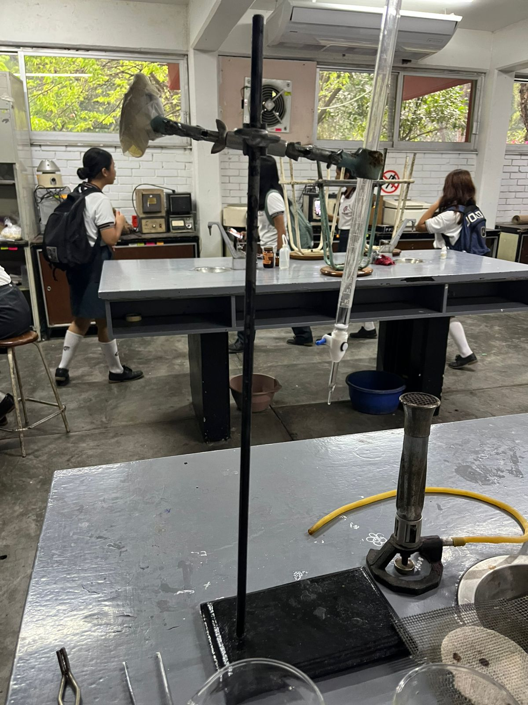
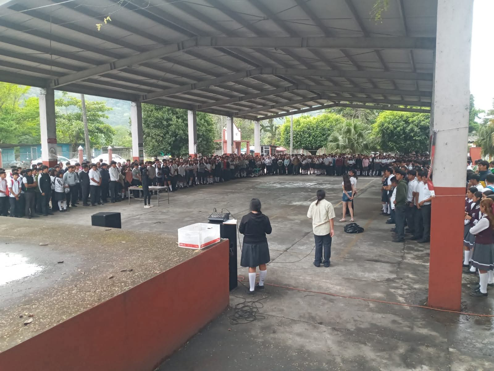
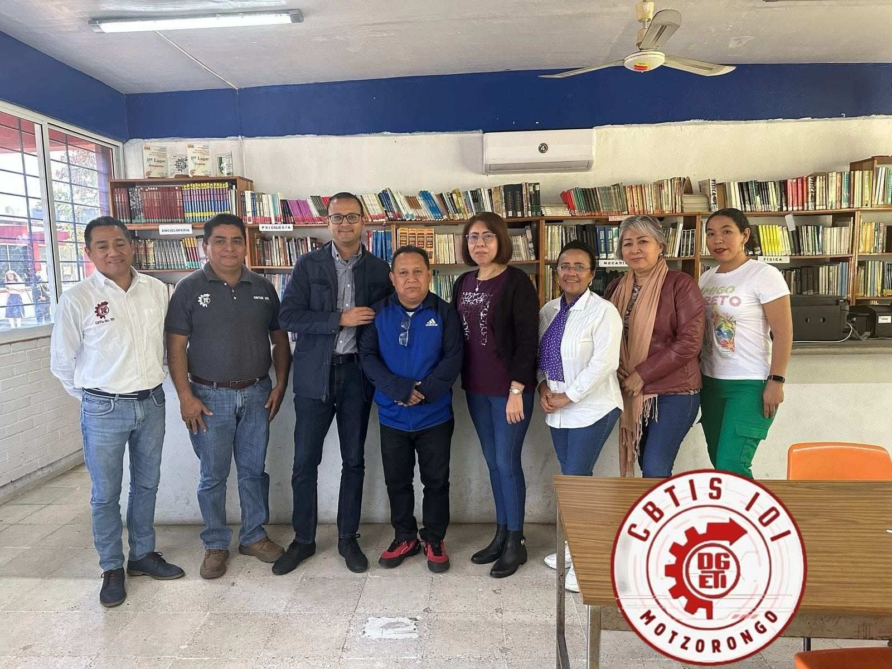
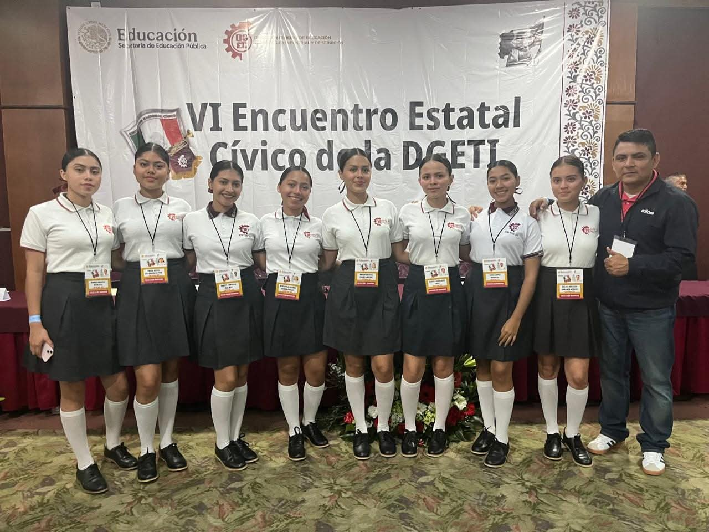

El CBTis No. 101 fue fundado en la década de los 80 en respuesta a la necesidad de educación técnica en Motzorongo, Veracruz. Desde entonces, ha graduado a miles de estudiantes que ahora se desempeñan en industrias, hospitales, empresas y centros de investigación en todo el país. La institución ha evolucionado continuamente, adaptándose a las nuevas tecnologías y demandas del mundo laboral.
Motzorongo es una comunidad con fuerte identidad cultural y vocación industrial-agrícola, lo que convierte al CBTis 101 en un pilar fundamental para el desarrollo económico y profesional de sus habitantes.
Misión y Visión
Misión: Brindar una educación tecnológica integral, fomentando valores, conocimientos científicos y habilidades prácticas que permitan a nuestros estudiantes desarrollarse como ciudadanos responsables, críticos y productivos.
Visión: Ser una institución reconocida por su excelencia académica, innovación educativa y compromiso con la comunidad, formando líderes técnicos capaces de transformar su entorno y competir globalmente.
Carreras Técnicas
Mecánica Industrial: Capacita al estudiante en el diseño, instalación y mantenimiento de sistemas mecánicos. Esta carrera es vital para el funcionamiento de industrias manufactureras y metalúrgicas. Ventajas: alta demanda laboral, buen salario, posibilidad de autoempleo. 
Producción Industrial de Alimentos: Enseña técnicas para transformar materias primas en productos comestibles seguros y nutritivos. Fundamental para la seguridad alimentaria. Ventajas: trabajo en fábricas de alimentos, empresas de control de calidad, emprendimiento en el sector alimenticio.
Contabilidad: Forma técnicos capaces de registrar, analizar y presentar información financiera clave para la toma de decisiones en empresas públicas y privadas. Ventajas: amplio campo laboral, base sólida para estudiar administración o finanzas, posibilidad de consultoría.
Laboratorista Clínico: Enseña la recolección y análisis de muestras biológicas para ayudar en el diagnóstico médico. Ventajas: empleo en hospitales, laboratorios, clínicas y centros de investigación; gran aporte a la salud pública. 
Instalaciones
El CBTis 101 cuenta con talleres de alta especialización, laboratorios equipados, talleres con equipo profesional supervisados por un experto en la cada especialidad , contamos con una cafeteria, canchas de futbol y basquetbol, damos importancia a las costumbres y tradiciones en nuestra localidad, queremos que nuestras intalaciones sean un lugar adecuado pra su hijos nuestros maestros y personal del de la escuela nos aseguraremos que tenga una eduacion digna, seria un gran gusto que su hijo ingrese a nuestras instalaciones.
Actividades
Eventos deportivos interescolares
programa anti drogas y coferencias
Ferias tecnológicas y de emprendimiento
Participación en olimpiadas académicas y concursos nacionales
Galería



Ubicación
Estamos en Motzorongo, Veracruz. Una comunidad reconocida por su dedicación a la industria azucarera y cafetalera, con gente trabajadora y solidaria. CBTis 101 impulsa la educación y el desarrollo de la región.